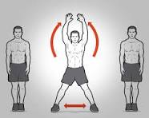

Treinar é sentir que você pode fazer algo que depende do seu esforço e da sua determinação. Quanto mais motivado você estiver, melhores vão ser os resultados!

A corrida no lugar é um exercício físico em que a pessoa simula correr, movendo rapidamente as pernas em um espaço limitado, como em uma esteira ou em um local fixo no chão. É uma forma conveniente de exercício cardiovascular que pode ser realizada em ambientes fechados e não requer muito espaço. Essa atividade ajuda a aumentar a frequência cardíaca, queimar calorias e melhorar a resistência aeróbica, semelhante à corrida ao ar livre, mas sem a necessidade de se deslocar.

O deslocamento lateral é um movimento em que uma pessoa se move para os lados, mantendo os pés paralelos ao solo e sem cruzá-los. É comumente usado em atividades físicas, como exercícios de condicionamento físico, treinamento esportivo e dança. Esse movimento pode ajudar a fortalecer os músculos das pernas, melhorar a agilidade, a coordenação motora e a estabilidade do core. O deslocamento lateral é frequentemente incorporado em rotinas de exercícios para promover o desenvolvimento de habilidades específicas necessárias em diversos esportes e atividades físicas.

A rotação de tronco é um movimento em que a parte superior do corpo, incluindo os ombros, os braços e o peito, se movem lateralmente em direções opostas. Este movimento envolve girar o tronco em torno da coluna vertebral. É comumente realizado em exercícios de alongamento, flexibilidade e fortalecimento, bem como em atividades esportivas como golfe, tênis e natação. A rotação de tronco pode ajudar a melhorar a flexibilidade da coluna vertebral, fortalecer os músculos abdominais, dorsais e oblíquos, além de promover uma postura melhor e reduzir o risco de lesões nas costas.
O polichinelo é um exercício aeróbico de corpo inteiro que envolve movimentos de saltos, flexões e extensões dos membros superiores e inferiores. Para executar um polichinelo, você começa em pé com os pés juntos e os braços ao lado do corpo. Então, em um movimento rápido, você salta para cima, estendendo os braços acima da cabeça e as pernas para os lados. Em seguida, você volta a juntar os pés e as mãos ao lado do corpo, repetindo o movimento em um ritmo acelerado. O polichinelo é um exercício eficaz para elevar a frequência cardíaca, queimar calorias, melhorar a coordenação e a agilidade, além de fortalecer os músculos das pernas, braços, ombros e core. É frequentemente incorporado em rotinas de exercícios de aquecimento, treinamento cardiovascular e circuitos de alta intensidade.